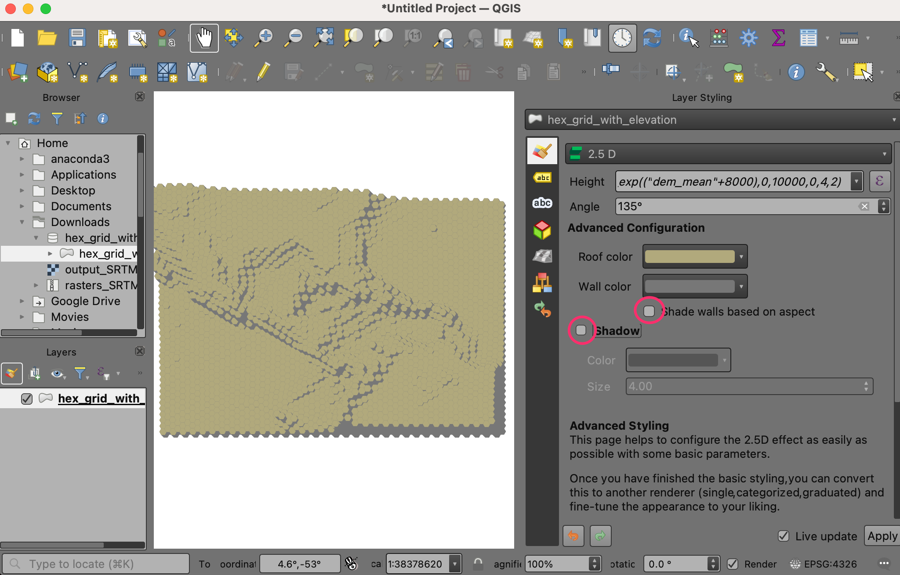
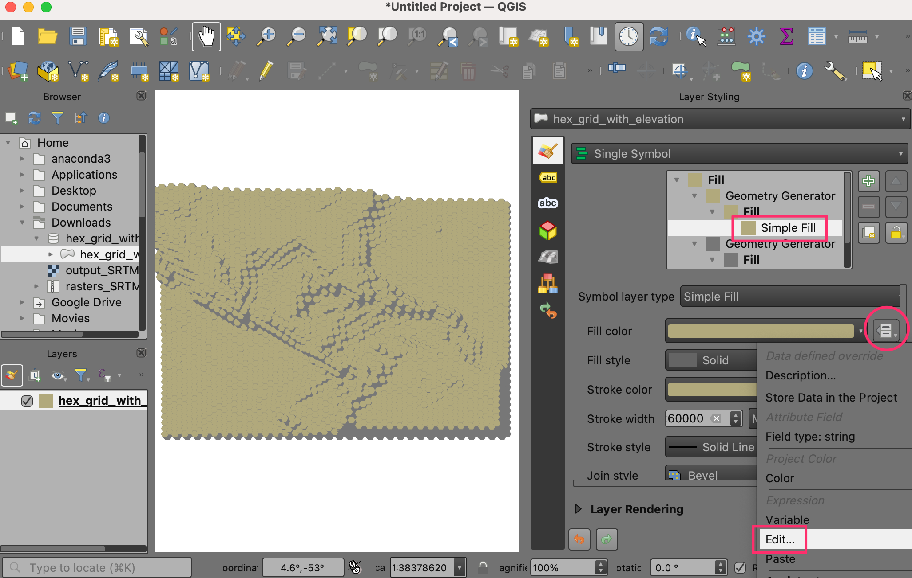
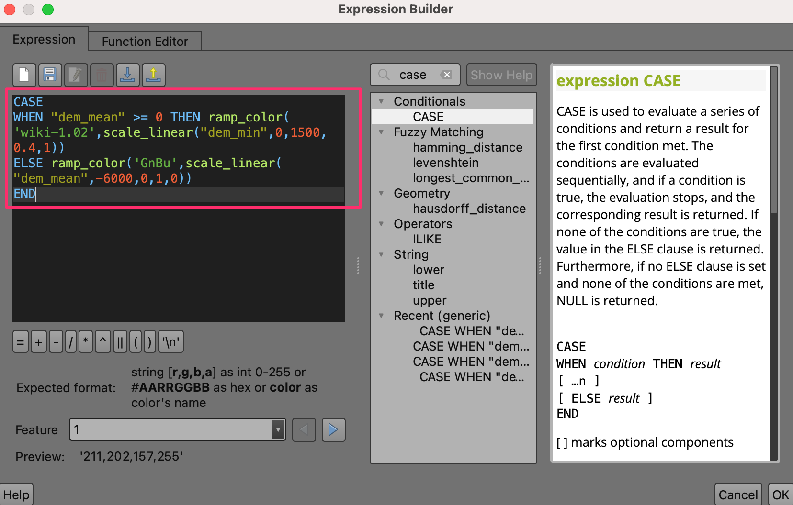
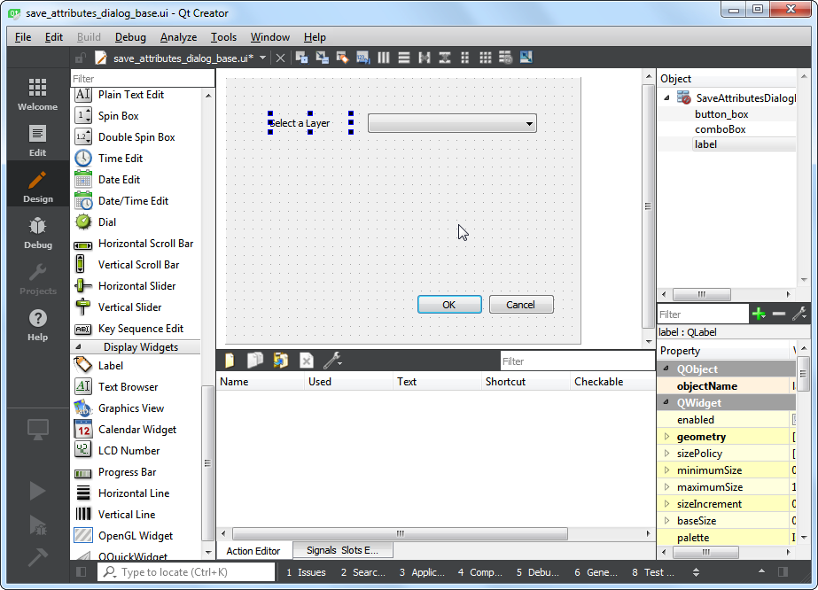
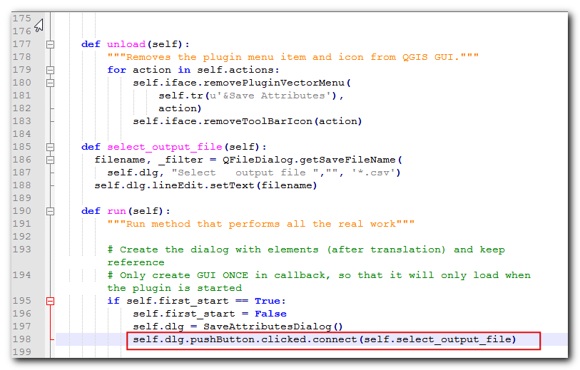

Ein Python Plugin erstellen (QGIS3)¶
Erweiterungen sind ein großartiger Weg, um die Funktionalität von QGIS zu erweitern. Man kann mit Python Erweiterungen schreiben, die einen einfachen Knopf hinzufügen oder auch ausgefeilte Werkzeuge erstellen. Diese Anleitung umreißt den Ablauf zum Aufsetzen der Entwicklungsumgebung, zum Entwurf einer Benutzeroberfläche der Erweiterung und zum Schreiben von Programmcode zur Interaktion mit QGIS. Um sich mit den Grundlagen vertraut zu machen, ist es sinnvoll sich noch einmal folgende Anleitung anzusehen: Mit der Pythonprogrammierung loslegen (QGIS3).
Bemerkung
If you are building a new plugin, I strongly recommend building a Processing Plugin instead of the GUI plugin described in this tutorial. See Ein Verarbeitungsplugin erstellen (QGIS3) for details.
Überblick über die Aufgabe¶
Wir werden ein einfaches Plugin mit dem Namen Save Attributes erstellen, das es dem Nutzer erlaubt, einen Vektor-Layer auszuwählen und seine Attribute in einer CSV-Datei zu sichern.
Die Werkzeuge beschaffen¶
Qt Creator¶
Qt ist ein Anwendungsframework, das zur Entwicklung von Anwendungen unter Windows, Mac, Linux und verschiedenen mobilen Betriebssystemen genutzt wird. QGIS selbst wird unter Nutzung des Qt-Frameworks entwickelt. Bei der Entwicklung unserer Erweiterung werden wir zur Gestaltung der Benutzerschnittstelle eine Anwendung mit dem Namen Qt Creator verwenden.
Lade Qt Creator von folgender Adresse herunter Qt Offline Installers und installiere es. Denke daran Qt Creator unter download auszuwählen. Beachte, dass du ein freies Qt Konto vor der Installation erstellen musst.
Bemerkung
Die Installationsverwaltung für Windows OSGeo4w enthält eine Kopie von Qt Designer, einer vereinfachten Version von Qt Creator, die perfekt zur Erstellung von Erweiterungen geeignet ist. Wenn man QT Designer von verwendet, muss man Qt Creator nicht herunterladen.

Python Bindings für Qt¶
Da wir die Erweiterung in Python entwickeln, benötigen wir die Python Bindings für Qt. Das Verfahren zur Installation der Bindings hängt von der verwendeten Plattform ab. Um Erweiterungen zu erstellen, benötigen wir das Kommandozeilentool pyrcc5.
Windows
Relevant python bindings are included in the QGIS install on Windows. But to use them from the plugin folder, we need to indicate the path to the QGIS install.
Erstelle eine Windows-Batch Datei (.bat Erweiterung) mit folgendem Inhalt und speichere sie auf dem Rechner als compile.bat ab. Wir werden die Datei später in den plugin Ordner kopieren. Wenn QGIS in einem anderen Verzeichnis installiert ist, muss der Pfad C:\OSGeo4W64\bin\ entsprechend angepasst werden.
@echo off
call "C:\OSGeo4W64\bin\o4w_env.bat"
call "C:\OSGeo4W64\bin\qt5_env.bat"
call "C:\OSGeo4W64\bin\py3_env.bat"
@echo on
pyrcc5 -o resources.py resources.qrc

Mac
Installiere den Packetmanager Homebrew. Installiere das Packet PyQt durch Ausführen des folgenden Kommandos:
brew install pyqt
- Linux
In Abhängigkeit von der Distribution muss folgendes Paket gesucht und installiert werden:
python-qt5. Für Ubuntu and Debian-basierte Distributionen, kann folgendes Kommando verwendet werden:
sudo apt-get install python-qt5
Bemerkung
Unter Umständen wurde das Paket schon vorher mit QGIS installiert.
Ein Texteditor oder eine Python IDE¶
Jede Art von Softwareentwicklung erfordert einen guten Texteditor. Wenn man schon einen Lieblingstexteditor oder eine IDE (Integrated Development Environment - Softwareentwicklungsumgebung) hat, kann man sie hier verwenden. Ansonsten bieten alle Plattformen eine Vielzahl an freien oder kommerziellen Möglichkeiten für einen Texteditor. Wähle den Editor entsprechend deiner Erfordernisse aus.
In dieser Anleitung wird der Editor Notepad++ für Windows verwendet.
Windows
Notepad++ ist ein guter und freier Editor für Windows. Lade den Editor unter <https://notepad-plus-plus.org/download/>`_ herunter und installiere ihn.
Bemerkung
Wenn man Notepad++ verwendet, muss man darauf achten, dass unter die Einstellung Durch Leerzeichen ersetzen gewählt ist. Python ist sehr empfindlich bezüglich Leerzeichen und diese Einstellung stellt sicher, dass Tabulator und Leerzeichen richtig ausgewertet werden.
Plugin Builder Erweiterung¶
Es gibt eine nützliche QGIS Erweiterung Plugin Builder, die alle notwendigen Dateien und eine Vorlage des Programmcodes für die Erweiterung erstellt. Finde und installiere die Erweiterung Plugin Builder. Unter Verwenden von Erweiterungen findet man weitere Details zur Installation von Erweiterungen.
Plugins Reloader Erweiterung¶
Dies ist eine andere Erweiterung, die die schrittweise Entwicklung von Erweiterungen ermöglicht. Mit Hilfe dieser Erweiterung kann man den Programmcode der Erweiterung ändern und die Auswirkung in QGIS sehen, ohne QGIS jedes Mal neu starten zu müssen. Finde und installiere die Erweiterung Plugin Reloader. Unter Verwenden von Erweiterungen findet man weitere Details zur Installation von Erweiterungen.
Bemerkung
Plugin Reloader ist eine experimentelle Erweiterung. Man muss die Einstellung Auch experimentelle Erweiterungen anzeigen unter Erweiterungen zu aktivieren.
Arbeitsablauf¶
Öffne QGIS. Gehe zu .

Wir sehen nun das Fenster QGIS Plugin Builder mit einem Formular. Wir füllen das Formular mit Details zu unserer Erweiterung. Das Feld Class name enthält den Namen der Python Klasse mit der Funktionalität der Erweiterung. Dieser Name wird auch dem Ordnernamen entsprechen, der alle zur Erweiterung gehörenden Dateien enthält. Wir verwenden
SaveAttributesals Class name. Das Feld Plugin name ist der Name unter dem die Erweiterung im Plugin Manager erscheinen wird. Wir geben hierSave Attributesein. Im Feld Description fügen wir eine Beschreibung hinzu. Das Feld Module name enthält den Namen der Python Hauptdatei der Erweiterung. Wir geben hiersave_attributesein. Wir lassen die Versionsnummer unverändert und geben unseren Namen und E-mail Adresse in die entsprechenden Felder ein. Klicke auf Next.

Gebe eine kurze Beschreibung der Erweiterung im Eingabefenster About ein und klicke auf Next.

Wähle
Tool button with dialogim Auswahlfeld Template selector`. Im Feld Text for menu item enthält die Bezeichnung der Erweiterung im QGIS Menü, die der Nutzer vorfindet. Wir gebenSave Attributes as CSVein. Das Menu Feld legt fest, an welcher Stelle die Erweiterung in QGIS eingefügt wird. Da unsere Erweiterung für Vektordaten gedacht ist, wählen wirVektor. Klicke auf Next.

Der Plugin Builder fragt nun nach den zu generierenden Dateitypen, Wir belassen die Standardeinstellung und klicken auf Next.

Da wir die Erweiterung nicht veröffentlichen wollen, können wir die Einträge Bug tracker, Repository und Home page unverändert lassen. Wir setzen den Haken bei Flag the plugin as experimental und kicken auf Next.

Wir werden als Nächstes aufgefordert, ein Verzeichnis für die Erweiterung zu vergeben. Fürs Erste geben wir zum Speichern ein lokales Verzeichnis an, das wir leicht erreichen und klicken auf Generate.

Drücke jetzt auf den generate Knopf. Wir erhalten ein Bestätigung, sobald die Vorlage der Erweiterung erstellt wurde.

Bemerkung
Unter Umständen erhalten wir eine Meldung, dass pyrcc5 nicht im Pfad gefunden wurde. Wir können die Meldung ignorieren.
Bevor wir die neu erstellte Erweiterung nutzen können, müssen wir die Datei
resources.qrckompilieren, die vom Plugin Builder erstellt wurde. Diese Datei gehört zum Qt Resource System, das den Bezug zu allen in der Erweiterung genutzten Binärdateien herstellt. Bei dieser Erweiterung ist das nur das Icon der Erweiterung. Beim Kompilieren entsteht Programmcode, der von der Erweiterung unabhängig von der genutzten Plattform verwendet werden kann. Folge im nächsten Schrit den plattformabhängigen Hinweisen.
Windows
Wir können nun die Datei compile.bat (erstellt im Abschnitt Python Bindings für Qt am Beginn) in den Ordner der Erweiterung kopieren. Klicke nachdem die Datei kopiert wurde doppelt darauf, um sie auszuführen. Wenn der Start erfolgreich war, sehen wir eine neue Datei resources.py im Ordner.

Bemerkung
Wenn dieser Schritt fehlschlägt, können wir cmd.exe starten und mit Hilfe des Kommandos cd zum Verzeichnis der Erweiterung wechseln. Um die Fehlermeldung zu erhalten, starte die Batch-Datei durch Ausführen von compile.bat.
Mac und Linux
Wir müssen zuerst pb_tool installieren. Öffne ein Terminal und installiere es mit Hilfe von pip.
sudo pip3 install pb_tool
Öffne ein Terminal, gehe zum Verzeichnis der Erweiterung und gebe pb_tool compile ein. Damit wird das Kommando pyrcc5 aufgerufen, das wir im Abschnitt Python Bindings für Qt installiert hatten.
pb_tool compile
QGIS Erweiterungen werden in einem besonderen Ordner gespeichert. Wir müssen das Verzeichnis unserer Erweiterung in diesen Ordner kopieren, bevor wir die Erweiterung benutzen können. Den aktuellen Profilordner finden wir in QGIS unter .

Kopiere den Ordner der Erweiterung in folgenden Ordner .

Jetzt können wir einen ersten Blick auf die brandneu erstellte Erweiterung werfen. Schließe QGIS und starte es erneut. Gehe zu und schalte die Erweiterung
Save Attributesim Bereich Installiert ein.

Wir bemerken ein neues Icon in der Erweiterungen Toolleiste und einen neuen Menüeintrag unter . Wähle ihn aus, um die Dialogbox der Erweiterung zu starten.

Wir sehen eine neue leere Dialogbox mit der Bezeichnung Save Attributes. Schließe die Dialogbox.

Wir werden nun die Dialogbox gestalten und einige Elemente der Benutzerschnittstelle hinzufügen. Öffne das Programm
Qt Creatorund wähle .

Gehe zum Verzeichnis der Erweiterung und markiere die Datei
save_attributes_dialog_base.ui. Klicke auf Open.

Bemerkung
Windows versteckt das Verzeichnis AppData, so dass es vielleicht nicht im Auswahlfenster angezeigt wird. Wir können AppData im Feld Dateiname auf einer Verzeichnisebene höher eingeben, um das Verzeichnis zu öffnen.
Die Erweiterung ist eine leere Dialogbox. Wir können mittels drag-and-drop Elemente von der linken Fensterseite in die Dialogbox ziehen. Wir fügen eine Combo Box aus Input Widgets hinzu. Ziehe das Element in die Dialogbox.

Passe die Größe der Dialogbox an. Ziehe jetzt ein Label Element aus Display Widget in die Dialogbox.

Klicke auf den Text des Labels und gebe ein:
Einen Layer auswählen.

Wir speichern die Datei indem wir zu gehen. Beachte, dass der Name des Auswahlfeldes
comboBoxlautet. Um mit dem Objekt mittels Pythonprogrammcode zu kommunizieren, muss der Bezug über den Namen des Objekts hergestellt werden.

Wir laden die Erweiterung jetzt neu, um die Veränderungen des Dialogfensters zu sehen. Gehe zu . Wähle
SaveAttributesin der Dialogbox Configure Plugin reloader.

Klicke auf den Knopf Reload plugin, um den aktuellen Stand der Erweiterung zu laden. Klicke auf den Knopf Save Attributes as CSV, um die neu gestaltete Dialogbox anzuzeigen.

Wir werden jetzt einige Funktionen zur Erweiterung hinzufügen, die die Auswahlbox mit den in QGIS geladenen Layern füllt. Gehe zum Verzeichnis der Erweiterung und lade die Datei
save_attributes.pyin einen Texteditor. Füge als Erstes am Anfang der Datei bei den anderen Importen ein:from qgis.core import QgsProject
Scrolle nun nach unten und finde die Methode
run(self). Diese Methode wird aufgerufen, wenn man den Knopf in der Toolbar drückt oder die Erweiterung vom Menü aus aufruft. Gebe den folgenden Programmcode am Beginn der Methode ein. Der Programmcode ermittelt die in QGIS geladenen Layer und fügt sie demcomboBoxObjekt in der Dialogbox der Erweiterung hinzu.# Fetch the currently loaded layers layers = QgsProject.instance().layerTreeRoot().children() # Clear the contents of the comboBox from previous runs self.dlg.comboBox.clear() # Populate the comboBox with names of all the loaded layers self.dlg.comboBox.addItems([layer.name() for layer in layers])


Zurück im QGIS Fenster laden wir die Erweiterung durch Klick auf Reload plugin neu. Um die neue Funktionalität zu testen, müssen wir einige Layer in QGIS laden. Wir starten nach dem Laden der Layer die Erweiterung durch . Wir sehen, dass unser Auswahlfeld jetzt die Namen der in QGIS geladenen Layer enthält.

Wir fügen nun die verbleibenden Elemente der Benutzerschnittstelle hinzu. Gehe zurück zum Qt Creator und lade die Datei
save_attributes_dialog_base.ui. Füge einLabelDisplay Widget hinzu und ändere den Text zuWähle eine Ausgabedatei. Füge ein Input Widget vom TypLineEdithinzu, das den Ausgabepfad anzeigt, den der Nutzer gewählt hat. Füge als Nächstes einen Button vom TypPush Buttonhinzu und ändere die Bezeichnung des Knopfes zu.... Denke an die Objektnamen der Widgets, die wir zur Interaktion mit ihnen verwenden müssen. Sichere die Datei.

Wir werden jetzt Python Programmcode einfügen, der den Dateimanager öffnet und die Pfadauswahl anzeigt, sobald der Nutzer den
...Knopf drückt. Öffne die Dateisave_attributes.pyin einem Texteditor. FügeQFileDialogzurQtWidgetsListe der Importe am Beginn der Datei hinzu.

Füge eine neue Methode
select_output_filemit dem folgenden Programmcode hinzu. Der Programmcode führt zum Öffnen des Dateimanagers und füllt das Eingabefeld mit dem Dateipfad, den der Nutzer auswählt. Beachte wiegetSaveFileNameein Tupel des Dateinamens und des Dateifilters zurückgibt.
def select_output_file(self): filename, _filter = QFileDialog.getSaveFileName( self.dlg, "Select output file ","", '*.csv') self.dlg.lineEdit.setText(filename)
Wir müssen nun Programmcode hinzufügen, der dafür sorgt, dass die Methode
select_output_fileaufgerufen wird, wenn der Knopf … gedrückt wird. Wir scrollen bis zur Methoderunnach unten und fügen die folgende Zeile in den Initialisierungsblock der Dialogbox ein. Dieser Programmcode verbindet die Methodeselect_output_filemit demclickedSignal des push button widgets.
self.dlg.pushButton.clicked.connect(self.select_output_file)
Zurück in QGIS laden wir die Erweiterung neu und starten sie. Wenn alles klappt, können wir den
...Knopf drücken und eine lokale Ausgabe-Textdatei auswählen.

Wenn man auf OK in der Dialogbox der Erweiterung klickt, passiert gar nichts. Das ist so, weil wir noch keine Funktion implementiert haben, die die Attributinformationen vom Layer extrahiert und in eine Textdatei speichert. Es sind jetzt alle Voraussetzungen vorhanden, um dies zu tun. Wir suchen die Stelle innerhalb der
runMethode an derpasssteht. Wir ersetzen es mit dem Programmcode unten. Die Erklärung für diesen Programmcode finden wir unter Mit der Pythonprogrammierung loslegen (QGIS3).filename = self.dlg.lineEdit.text() with open(filename, 'w') as output_file: selectedLayerIndex = self.dlg.comboBox.currentIndex() selectedLayer = layers[selectedLayerIndex].layer() fieldnames = [field.name() for field in selectedLayer.fields()] # write header line = ','.join(name for name in fieldnames) + '\n' output_file.write(line) # write feature attributes for f in selectedLayer.getFeatures(): line = ','.join(str(f[name]) for name in fieldnames) + '\n' output_file.write(line)

Wir müssen noch eine letzte Sache hinzufügen. Wenn die Funktion erfolgreich abgeschlossen wurde, sollte das dem Nutzer mitgeteilt werden. Der bevorzugte Weg in QGIS Informationen an den Nutzer weiterzugeben ist die Methode
self.iface.messageBar().pushMessage(). FügeQgiszurqgis.coreListe der Importe am Beginn der Datei hinzu und gebe folgenden Programmcode am Ende derrunMethode ein.
self.iface.messageBar().pushMessage( "Success", "Output file written at " + filename, level=Qgis.Success, duration=3)

Jetzt ist unsere Erweiterung fertig. Lade die Erweiterung neu und probiere sie aus. Wir stellen fest, dass die gewählte Ausgabetextdatei die Attribute des Vektorlayers enthält.

Wir können den Ordner der Erweiterung zippen und ihn mit anderen Nutzern teilen. Der Nutzer muss dazu die zip-Datei in sein Verzeichnis für Erweiterungen entpacken und kann die Erweiterung dann ausprobieren. Wenn es sich um eine echte Erweiterung handelt, würde man sie nach QGIS Plugin Repository hochladen, so dass alle QGIS Nutzer die Erweiterung finden und nutzen können.
Bemerkung
Diese Erweiterung wurde nur zu Demonstrationszwecken erstellt. Veröffentliche die Erweiterung nicht und stelle sie nicht im QGIS plugin repository bereit.
Es folgt die vollständige Datei save_attributes.py als Referenz.
# -*- coding: utf-8 -*-
"""
/***************************************************************************
SaveAttributes
A QGIS plugin
This plugin saves the attributes of the selected vector layer as a CSV file.
Generated by Plugin Builder: http://g-sherman.github.io/Qgis-Plugin-Builder/
-------------------
begin : 2019-03-28
git sha : $Format:%H$
copyright : (C) 2019 by Ujaval Gandhi
email : ujaval@spatialthoughts.com
***************************************************************************/
/***************************************************************************
* *
* This program is free software; you can redistribute it and/or modify *
* it under the terms of the GNU General Public License as published by *
* the Free Software Foundation; either version 2 of the License, or *
* (at your option) any later version. *
* *
***************************************************************************/
"""
from PyQt5.QtCore import QSettings, QTranslator, qVersion, QCoreApplication
from PyQt5.QtGui import QIcon
from PyQt5.QtWidgets import QAction, QFileDialog
from qgis.core import QgsProject, Qgis
# Initialize Qt resources from file resources.py
from .resources import *
# Import the code for the dialog
from .save_attributes_dialog import SaveAttributesDialog
import os.path
class SaveAttributes:
"""QGIS Plugin Implementation."""
def __init__(self, iface):
"""Constructor.
:param iface: An interface instance that will be passed to this class
which provides the hook by which you can manipulate the QGIS
application at run time.
:type iface: QgsInterface
"""
# Save reference to the QGIS interface
self.iface = iface
# initialize plugin directory
self.plugin_dir = os.path.dirname(__file__)
# initialize locale
locale = QSettings().value('locale/userLocale')[0:2]
locale_path = os.path.join(
self.plugin_dir,
'i18n',
'SaveAttributes_{}.qm'.format(locale))
if os.path.exists(locale_path):
self.translator = QTranslator()
self.translator.load(locale_path)
if qVersion() > '4.3.3':
QCoreApplication.installTranslator(self.translator)
# Declare instance attributes
self.actions = []
self.menu = self.tr(u'&Save Attributes')
# Check if plugin was started the first time in current QGIS session
# Must be set in initGui() to survive plugin reloads
self.first_start = None
# noinspection PyMethodMayBeStatic
def tr(self, message):
"""Get the translation for a string using Qt translation API.
We implement this ourselves since we do not inherit QObject.
:param message: String for translation.
:type message: str, QString
:returns: Translated version of message.
:rtype: QString
"""
# noinspection PyTypeChecker,PyArgumentList,PyCallByClass
return QCoreApplication.translate('SaveAttributes', message)
def add_action(
self,
icon_path,
text,
callback,
enabled_flag=True,
add_to_menu=True,
add_to_toolbar=True,
status_tip=None,
whats_this=None,
parent=None):
"""Add a toolbar icon to the toolbar.
:param icon_path: Path to the icon for this action. Can be a resource
path (e.g. ':/plugins/foo/bar.png') or a normal file system path.
:type icon_path: str
:param text: Text that should be shown in menu items for this action.
:type text: str
:param callback: Function to be called when the action is triggered.
:type callback: function
:param enabled_flag: A flag indicating if the action should be enabled
by default. Defaults to True.
:type enabled_flag: bool
:param add_to_menu: Flag indicating whether the action should also
be added to the menu. Defaults to True.
:type add_to_menu: bool
:param add_to_toolbar: Flag indicating whether the action should also
be added to the toolbar. Defaults to True.
:type add_to_toolbar: bool
:param status_tip: Optional text to show in a popup when mouse pointer
hovers over the action.
:type status_tip: str
:param parent: Parent widget for the new action. Defaults None.
:type parent: QWidget
:param whats_this: Optional text to show in the status bar when the
mouse pointer hovers over the action.
:returns: The action that was created. Note that the action is also
added to self.actions list.
:rtype: QAction
"""
icon = QIcon(icon_path)
action = QAction(icon, text, parent)
action.triggered.connect(callback)
action.setEnabled(enabled_flag)
if status_tip is not None:
action.setStatusTip(status_tip)
if whats_this is not None:
action.setWhatsThis(whats_this)
if add_to_toolbar:
# Adds plugin icon to Plugins toolbar
self.iface.addToolBarIcon(action)
if add_to_menu:
self.iface.addPluginToVectorMenu(
self.menu,
action)
self.actions.append(action)
return action
def initGui(self):
"""Create the menu entries and toolbar icons inside the QGIS GUI."""
icon_path = ':/plugins/save_attributes/icon.png'
self.add_action(
icon_path,
text=self.tr(u'Save Attributes as CSV'),
callback=self.run,
parent=self.iface.mainWindow())
# will be set False in run()
self.first_start = True
def unload(self):
"""Removes the plugin menu item and icon from QGIS GUI."""
for action in self.actions:
self.iface.removePluginVectorMenu(
self.tr(u'&Save Attributes'),
action)
self.iface.removeToolBarIcon(action)
def select_output_file(self):
filename, _filter = QFileDialog.getSaveFileName(
self.dlg, "Select output file ","", '*.csv')
self.dlg.lineEdit.setText(filename)
def run(self):
"""Run method that performs all the real work"""
# Create the dialog with elements (after translation) and keep reference
# Only create GUI ONCE in callback, so that it will only load when the plugin is started
if self.first_start == True:
self.first_start = False
self.dlg = SaveAttributesDialog()
self.dlg.pushButton.clicked.connect(self.select_output_file)
# Fetch the currently loaded layers
layers = QgsProject.instance().layerTreeRoot().children()
# Clear the contents of the comboBox and lineEdit from previous runs
self.dlg.comboBox.clear()
self.dlg.lineEdit.clear()
# Populate the comboBox with names of all the loaded layers
self.dlg.comboBox.addItems([layer.name() for layer in layers])
# show the dialog
self.dlg.show()
# Run the dialog event loop
result = self.dlg.exec_()
# See if OK was pressed
if result:
filename = self.dlg.lineEdit.text()
with open(filename, 'w') as output_file:
selectedLayerIndex = self.dlg.comboBox.currentIndex()
selectedLayer = layers[selectedLayerIndex].layer()
fieldnames = [field.name() for field in selectedLayer.fields()]
# write header
line = ','.join(name for name in fieldnames) + '\n'
output_file.write(line)
# write feature attributes
for f in selectedLayer.getFeatures():
line = ','.join(str(f[name]) for name in fieldnames) + '\n'
output_file.write(line)
self.iface.messageBar().pushMessage(
"Success", "Output file written at " + filename,
level=Qgis.Success, duration=3)